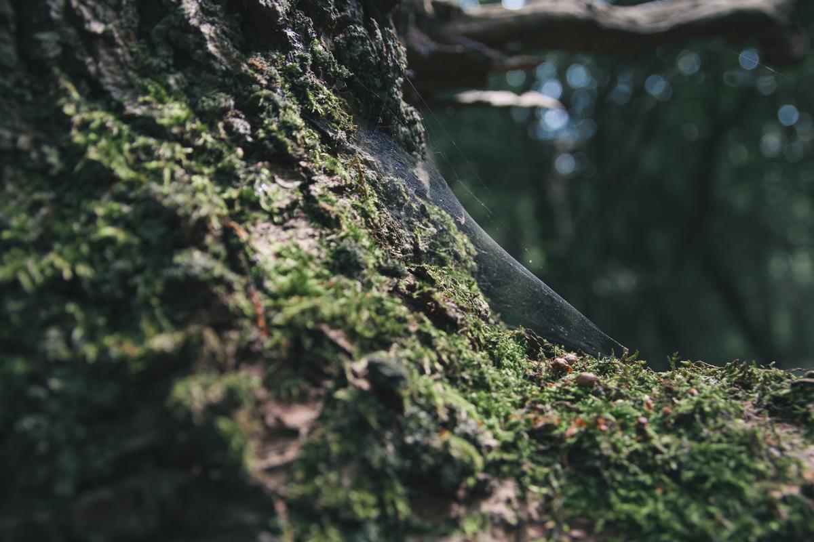
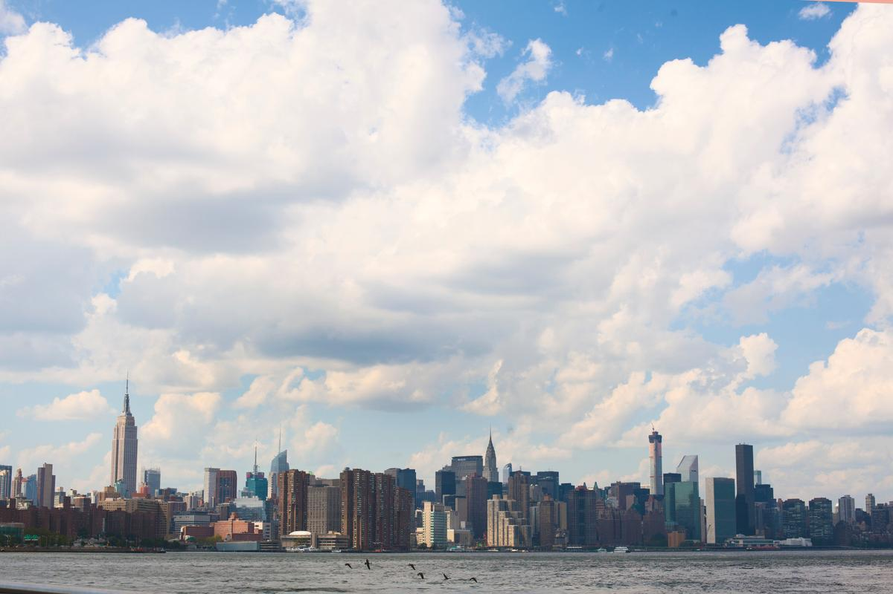
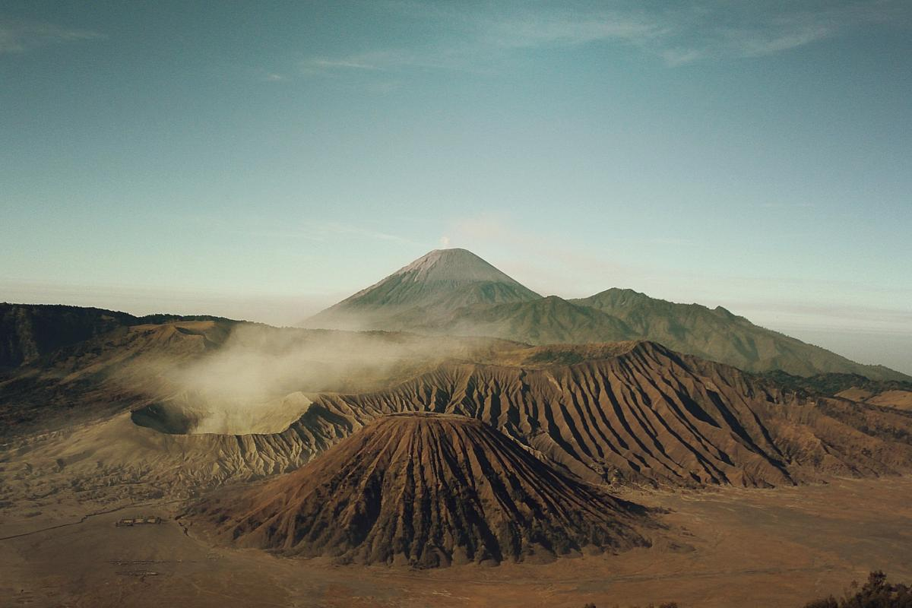

地球概論
概論 : 地球科學
地球氣候的最顯著特徵為它廣大的兩極地區、兩個較狹窄的溫帶地區、及廣闊的赤道熱帶和亞熱帶地區。

概論 : 地球結構
固體地球在地質及生物過程中演化並留下原本情況的痕跡。地殼分為幾個板塊，它們在地質年代間漸漸在表面移動。
概論 : 大氣情況
地球的大氣情況因為生命體的出現而產生了巨大轉變，並促成了穩定表面環境的生態平衡。
生態系統

生態系統概念的萌芽
所有形態的生物都會和她們存在的環境及其他生命體互動。在二十世紀此假設引發了「生態系統」的概念，並定義其為在任何情況下的生物與環境間的相互作用。
生態系統的組成
生態系統由無生命的和有生命的部分組成，並已一個互相關聯的方式運作。其結構和成分受到眾多相關的環境因素所影響。這些因素的改變可以引起生態系統的轉變。部分較為重要的構成要素有：土壤、大氣層、太陽輻射、水及生物。
物種間的連繫
每種生物都與其他形成環境的元素有一個連續的關係。物種在生態系統中與其他物種在食物鏈中互相聯繫及依賴，並在她們及環境之間交換能量與物質。
人類的影響
